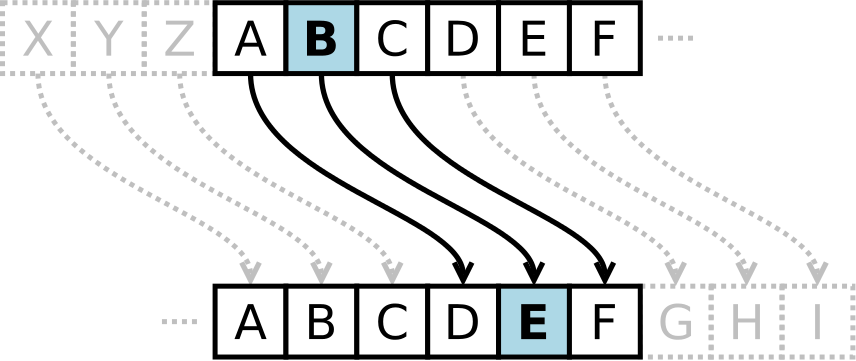

Introducere
În criptografie, cifrul lui Cezar, numit şi cifru cu deplasare, codul lui Cezar sau deplasarea lui Cezar, este una dintre cele mai simple şi mai cunoscute tehnici de criptare. Este un tip de cifru al substituţiei, în care fiecare literă din textul iniţial este înlocuită cu o literă care se află în alfabet la o distanţă fixă faţă de cea înlocuită. De exemplu, cu o deplasare de 3 poziţii, A este înlocuit cu D şi aşa mai departe. Această metodă este numită aşa după Iulius Cezar, care o folosea pentru a comunica cu generalii săi. Pasul de criptare al cifrului lui Cezar este de obicei încorporat în scheme mai complexe precum Cifrul Vigenere, şi încă mai are aplicaţii moderne în sistemul ROT13. Ca orice alt cifru bazat pe substituţii alfabetice, cifrul lui Cezar este simplu de descifrat şi în practică nu oferă securitate suficientă.
Reprezentare a corespondenţei dintre litere:
 h3> IstorieCifrul Cezar este denumit după Iulius Cezar, care, conform Suetoniu, îl folosea cu o deplasare de 3 pentru protejarea mesajelor cu importanţă militară:
Dacă avea ceva confidenţial de comunicat, scria încifrat, adică schimba ordinea literelor din alfabet, astfel încât nu se putea înţelege nici un cuvânt. Dacă cineva doreşte să descifreze şi să înţeleagă, trebuie să înlocuiască a patra literă din alfabet, adică D, cu A, şi aşa mai departe pentru celelalte.
-Suetonius, Viaţa lui Iulius Cezar 56
Deşi Cezar a fost primul care a fost folosit cifrul într-un mod în care se poate atesta, alte cifruri bazate pe substituţie se cunosc ca fiind folosite anterior. Nepotul lui Iulius Cezar, Augustus, a folosit de asemenea cifrul, dar cu o deplasare de unu:
Când scria încifrat, scria B în loc de A, C în loc de B, şi restul literelor pe acelaşi principiu, folosind AA pentru X.
-Suetonius, Viaţa lui Augustus 88
Aplicaţie practică
Spargerea cifrului
Cifrul Cezar poate fi spart uşor chiar şi având la dispoziţie numai criptotextul. Două situaţii pot fi luate în considerare:
- Atacatorul cunoaşte (sau ghiceşte) că a fost folosită un fel de substituţie simplă, dar nu neapărat o schemă Cezar
- Atacatorul ştie că s-a folosit cifrul Cezar, dar nu cunoaşte valoarea de deplasare.
În primul caz, cifrul poate fi spart folosind aceeaşi tehnică ca pentru cazul general de substituţie simplă, precum analiza frecvenţei sau cuvinte şablon. în timpul decriptării, este foarte probabil ca atacatorul să observe regularitatea în soluţie şi să deducă că cifrul Cezar este algoritmul folosit.
În al doilea caz, spargerea schemei este mult mai simplă. Deoarece numărul de deplasări posibile e limitat (31 în română), fiecare din ele poate fi testată printr-un atac prin forţă brută. O cale de a realiza acest lucru este de a scrie un fişier cu criptotextul într-un tabel cu toate deplasările posibile � tehnică numită uneori "completarea componentei normale".
Criptări şi decriptări multiple nu aduc nimic în plus în ceea ce priveşte securitatea. Aceasta pentru că două criptări, de exemplu deplasarea A şi deplasarea B, vor fi echivalente cu deplasarea A + B. în termeni matematici, criptarea cu diferite chei formează un grup.